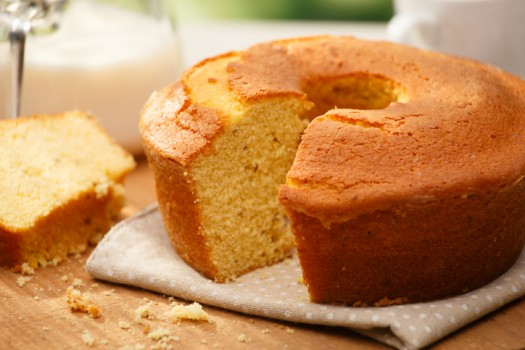

Davi Inácio - Linguagem de marcação e configuração - UnigranRio - 2018.1
Fricassê de frango
Imagem meramente ilustrativa
- Ingredientes
- 1 lata de creme de leite
- 1 lata de milho verde
- 1 copo de requeijão cremoso
- 100 g de azeitona sem caroço
- 2 peitos de frango desfiados
- 200 g de mussarela fatiada
- 100 g de batata palha
- 1 xícara de água
- 1 pitada de sal
- Modo de preparo
- Bata no liquidificador o milho, o requeijão, o creme de leite e a água
- Refogue o creme do liquidificador com o frango desfiado, as azeitonas e o sal até ficar com uma textura espessa
- Coloque o refogado numa assadeira, cubra com mussarela e espalhe a batata palha por cima
- Leve ao forno até borbulhar
- Sirva com arroz branco
Brigadeiro
Imagem meramente ilustrativa
- Ingredientes
- 1 caixa de leite condensado
- 1 colher (sopa) de margarina sem sal
- 7 colheres (sopa) de achocolatado ou 4 colheres (sopa) de chocolate em pó
- chocolate granulado
- Modo de preparo
- Em uma panela funda, acrescente o leite condensado, a margarina e o chocolate em pó
- Cozinhe em fogo médio e mexa até que o brigadeiro comece a desgrudar da panela
- Deixe esfriar e faça pequenas bolas com a mão passando a massa no chocolate granulado
Bolo de fubá

Imagem meramente ilustrativa
- Ingredientes
- 4 ovos
- 2 xícaras (chá) de açúcar
- 2 xícaras (chá) de trigo
- 1 xícara (chá) de fubá
- 3 colheres (sopa) de margarina
- 1 xícara (chá) de leite
- 4 colheres (chá) de fermento
- Modo de preparo
- Em uma batedeira, bata as claras em neve e acrescente o açúcar
- Adicione as gemas, a margarina, o leite, a farinha de trigo, o fubá e continue batendo
- Acrescente por último o fermento e misture com uma colher ou espátula
- Despeje a massa em uma forma untada e deixe assar em forno médio (180° C), preaquecido, por aproximadamente 30 minutos